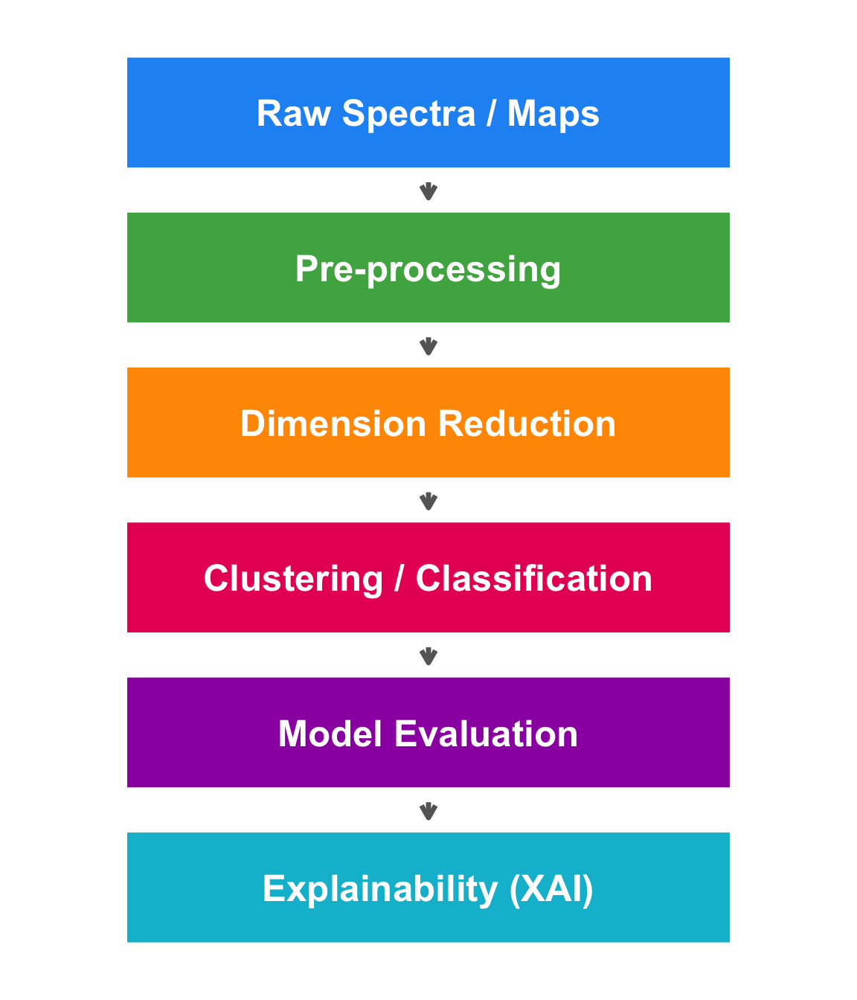

Show code
steps <- tibble(
y = 6:1,
label = c("Raw Spectra / Maps",
"Pre-processing",
"Dimension Reduction",
"Clustering / Classification",
"Model Evaluation",
"Explainability (XAI)"),
col = c("#2196F3","#4CAF50","#FF9800","#E91E63","#9C27B0","#00BCD4")
)
ggplot(steps, aes(x = 1, y = y)) +
geom_tile(aes(fill = col), width = 3.2, height = 0.75,
colour = "white", linewidth = 1.5) +
geom_text(aes(label = label), size = 6.5, fontface = "bold",
colour = "white") +
geom_segment(data = steps |> filter(y > 1),
aes(x = 1, xend = 1, y = y - 0.45, yend = y - 0.55),
arrow = arrow(length = unit(0.25, "cm")),
linewidth = 1.2, colour = "grey40") +
scale_fill_identity() +
coord_cartesian(xlim = c(-1, 3)) +
theme_void() +
theme(plot.margin = ggplot2::margin(5, 5, 5, 5))